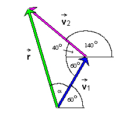
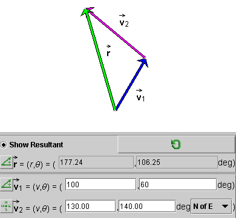

and the angle a. The direction angle q of the resultant relative to the horizontal
pointing right is then q = a + 60o.
and the angle a. The direction angle q of the resultant relative to the horizontal
pointing right is then q = a + 60o.
A diagram showing all relevant quantities is shown in the following Figure 2.

Figure 2
We want to calculate the magnitude r of the resultant
and the angle a. The direction angle q of the resultant relative to the horizontal
pointing right is then q = a + 60o.
We will use the law of cosines to calculate r and the law of sines to calculate a. For statements of these laws follow the links under Related Items.
From Figure 2, the law of cosines gives for the square of the
magnitude r of vector the
equation
r2 =
v12 + v22
- 2v1v2 cos
100o  (1)
(1)
r2 = 1002 +
1302 - 2x100x130 cos 100o = 31,414.85. (2)
(2)
Note that the angle opposite to vector is equal to 60 + 40 = 100o.
Taking the square root of both sides of Equation (2) gives
r = 177.24 . (3)
(3)
In applying the law of sines to calculate a, we pair the angle a with the opposite side of magnitude v2 and the 100o-angle with the opposite side of magnitude r. This results in the equation
(sin a)/v2 = (sin
100o)/r  (4)
(4)
sin a =
(v2/r) sin 100o = (130/177.24)
sin 100o = 0.722326 .  (5)
(5)
a = 46.25o
 and
and  q
= 46.25 + 60 = 106.25o .
q
= 46.25 + 60 = 106.25o .  (6)
(6)
You can use the applet on Page 4 to check this result and practise calculating the resultants of other pairs of vectors. The applet displays the parameters defining the resultant in four different ways. Detailed information about the applet and another lesson on vector addition is available under Applet Help on the applet's Help menu.
Figure 3 below illustrates how the applet displays the magnitude
r and direction angle q of the
resultant of two vectors  1 and 2.
1 and 2.

Figure 3
A resultant can also be calculated using scalar components, and the applet on Page 4 can display the resultant in scalar components. For an explanation on how to calculate a resultant this way, go to Vectors/Scalar Components/Explain It.